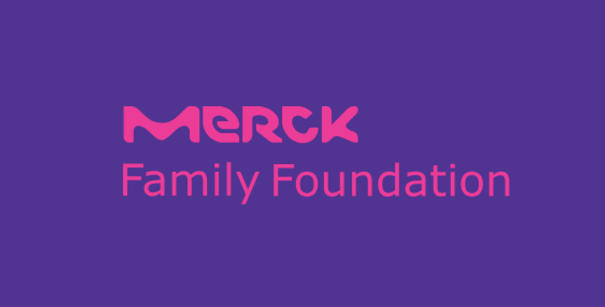
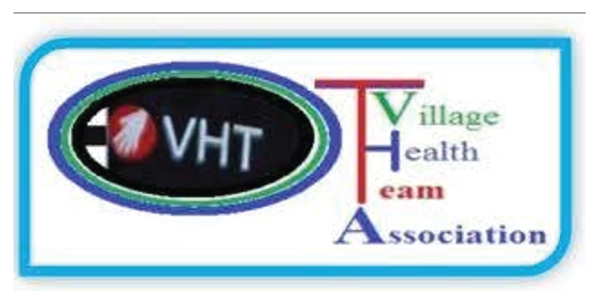

CareConnect Amuru
CareConnect Amuru
Bringing healthcare closer to rural communities by empowering Village Health Team members with the tools to reach every household.
Bringing healthcare closer to rural communities by empowering Village Health Team members with the tools to reach every household.

In rural Amuru District, where up to 75% of diseases are preventable, over 900 Village Health Team volunteers serve as the first link between communities and the health system.
Yet limited mobility, often requiring them to walk over 5km daily, restricts home visits and delays timely referrals. CareConnect Amuru empowers VHTs with the tools to reach every household.
We restore idle and broken bicycles at a VHT-managed mechanical workshop, extending their lifespan and maximising existing resources.
To reach every VHT, we procure and distribute additional bicycles. Local sourcing and international partnerships ensure cost-effectiveness and environmental responsibility.
We revitalise the Amuru VHT mechanical workshop as a hub for maintenance and sustainability, operating a community-supported maintenance model.
Piloting bamboo bicycle frames using renewable, locally available materials. Local artisans will be trained in frame fabrication, building a locally owned solution.
Provide functional bicycles to frontline health workers.
Train VHT members as mechanics.
Improved mobility enables faster referrals.
Pilot bamboo bicycle frames.
Project Team Lead
Project Advisor
VHTs Coordinator
Project Coordinator
Team Member

CareConnect Amuru is supported by the Merck Family Foundation with a one-year grant of €25,000 to support implementation of core activities.

Our work is implemented in close collaboration with the Amuru VHTs Association. VHTs are at the heart of CareConnect Amuru.
Your donation directly supports practical, community-driven solutions, from providing bicycles to strengthening local maintenance systems.